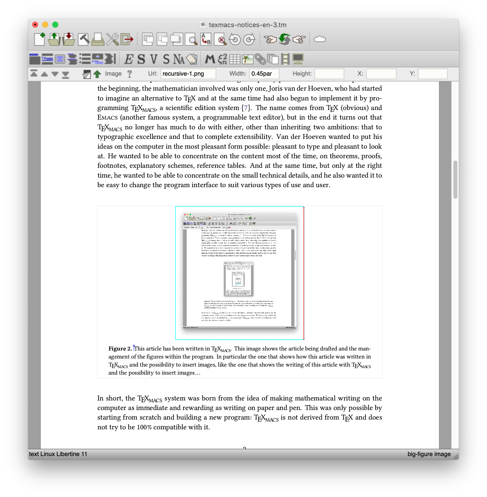

[main]Notes on TeXmacs
[main]Notes on TeXmacs
 [main]Notes on TeXmacs
[main]Notes on TeXmacs
A blog post which presents the motivations behind the design of
TeXmacs from a personal perspective.
[by @maxgubi]
I can't go to a restaurant and order food because I keep looking at the fonts on the menu.
D. Knuth [6]
As a researcher, teacher, and simply enthusiast, I spend a lot of time creating electronic documents that talk about math, physics, or other various technical topics, such as programming. Using a computer, instead of paper and pen, has the advantage that documents can be easily copied, shared, replicated with small or large changes, projected on a screen and even printed, if one truly misses paper and the relative sensory experience. There are also many disadvantages, though: the loss of immediacy associated with using a tool that we have practiced for most of our life; the freedom from a precise scheme, or the flexibility to make a drawing quickly and organize the text in non-coded ways, without a predetermined format, without the tool requiring excessive attention, or ancillary concerns. The most important thing in using pen and paper, which is difficult to obtain otherwise, is the possibility of concentrating on the essential, that is, on communicating (or simply recording) an idea, a concept, a new result.
Is it possible to find a “middle ground” between these two apparently complementary choices? A tool that lets you preserve the qualities of both? Those who have used programs like Microsoft Word or Knuth's TeX system [5] are well aware that writing formulas on the computer is not easy. In Word, immediacy is rewarded with sloppiness of the result and with graphical interfaces that tend to infantilize the user. In TeX, however, the perfection of the result is paid for with a user interface conceived for the computers from the '80s and which represents the contents in a form more suited to electronic processing than to the expressive needs of the human writer.
In College, learning how to use the TeX/LaTeX system [5, 7, 2] is a must for anyone who studies math or physics or has to deal with more than a couple of formulas here and there. Like many others, I have used it for several years, with a mixture of admiration and disgust. On even days, I thought it was a work of high craftsmanship (of medieval flavor, full of self-denial, mysticism, all witnessed by the versioning number of the program converging inexorably towards ). On odd days, I searched around for ways to get out of the constant torture (perhaps also a consequence of the very same medieval spirit) of composing my works in LaTeX.
At some point, however, I stumbled upon TeXmacs. TeXmacs is a project
born in the '90s with the aim of allowing mathematicians to express
their ideas in a natural and immediate way and at the same time produce
documents of the highest quality possible on current computers. In the
beginning, the mathematician involved was actually only one, Joris van
der Hoeven, who had started to imagine an alternative to TeX and at the
same time had also begun to implement it by programming TeXmacs, a
scientific editing system [8]. The name comes from TeX
(obvious) and
|  |
In short, the TeXmacs system was born from the idea of making mathematical writing on the computer as immediate and rewarding as paper & pen writing. This was only possible by starting from scratch and building a new program: TeXmacs is not derived from TeX and does not try to be 100% compatible with it.
TeXmacs is a “free software”: not only it is free, but anyone can use it, copy it and modify it as they wish. In practice, however, there is a small community of developers and users who take care of keeping it in good shape and making it grow. Shortly after I discovered it by accident in my research for an alternative to LaTeX, I started using it and now, like many other users, I use it every day to write my lectures, student worksheets, scientific articles. And I also use it to “think”, to do calculations and to take notes for new research. For example, I am writing this article in TeXmacs, and later maybe I can export it to PDF or HTML/MathJax [1] or even LaTeX as needed, but for now I can concentrate on the text without “visual noise” on my computer screen (Figure 1).
But I have to be honest. The first time I tried using TeXmacs I didn't quite like it: what I was trying to do didn't work and I quickly decreed that it was an amateur product, like many open source projects which started on good ground and enthusiasm without this being enough to achieve a serious result. In short, LaTeX was much better. Later on, by chance, I stumbled on it again, and with a little patience and an open mind I took a proper look at the manual to better understand the logic of the program and its use. And I realized that TeXmacs is instead a mature system, based on a series of concepts that deeply affect all aspects of the program: the hierarchical nature of the documents and the related structured edition, the visual navigation, the use of combinations of intuitive keys, the deduplication of the ways to invoke the various commands.
The ideas are simple but are not frequently found together in other more commonly used programs. For this reason, a little humility and intellectual curiosity are required to the novice user. If nothing else, one needs to take a look at the manual before deciding that the program is not working properly. TeXmacs requires an understanding of basic principles that cannot be traced back to the intuitive experience of the user familiar with Word or LaTeX.
In exchange for this little initial effort, you can start writing formulas or equations more smoothly, seeing them appear on the screen as they are written (Figure 2). It is truly within everyone's reach. During the last spring's lockdown, one of my children (attending middle school) had to send solutions to math homework to his teacher. A quick demonstration was enough to allow him to use TeXmacs: start a formula, write fractions and so on. Nothing complicated in itself, but difficult to obtain satisfactorily in Word and impossible to achieve quickly and easily in LaTeX. In a short time my son was able to send his results to his teacher in an aesthetically pleasing PDF document.
I find it a valid alternative to LaTeX, both in academia and in high school: for researchers to write papers or even books, for teachers to write worksheets or handouts and for students to write their theses or research reports. TeXmacs allows you to easily create presentations (“beamer” style) or posters and it is also suitable as an “electronic blackboard”, especially useful in this period of forced distance learning. For example, I teach by sharing a TeXmacs window via Zoom with my students, and I write what I would have written on the blackboard in other times. Finally I can produce a PDF which I can send to them as course notes (Figure 3). TeXmacs has also other features bridging towards a complete scientific office suite [3]: it is fully extensible via an embedded scripting language (Figure 4), it features spreadsheet-like functionalities and a tool to compare different versions of a document. Moreover it supports the integrated interactive execution of external programs, of computer algebra systems like Maxima, Axiom, Mathematica, Sage, of graphical programs like Asymptote, GNU plot, Python's Mathplotlib, Graphviz, Geogebra, Eukleides and even of LaTeX packages like TikZ or FeynMF. Finally, an integrated Jupyter client is under development.
For those who are passionate about programming, TeXmacs also presents the opportunity to contribute to, to extend, or simply to contemplate, a computer system that has to perform a series of complex tasks: one part of the program takes care of typographical composition (with algorithms similar to those used in TeX, see Figure 4), another deals with the user interaction (graphical interface, mouse and screen management), with the conversion from and to other formats (HTML, PDF, LaTeX), with the bibliographic references, yet another takes care of the edition of simple vector graphic contents. The user interface is written in Scheme (a dialect of Lisp, itself inspired by Church's lambda calculus). This allows one to program complex behaviors relatively easily and also to increase the program's capabilities without having to recompile it. The most critical parts are instead written in C ++ to ensure responsiveness in the interaction with the user.
To summarize: for twenty years TeXmacs has been a resource available to professional mathematicians and a wider audience, including university students and high school teachers and students. More information can be found on the program's website www.texmacs.org, including documentation and some introductory videos. Various tutorials and demonstrations are also hosted on YouTube. TeXmacs is also a community project that gathers mathematicians (and non-mathematicians) who are passionate about programming and sharing. New versions are regularly released both to eliminate the inevitable bugs and to introduce new features. Over the years the program has evolved, improved and adapted to the technological landscape, but the basic idea remains the same: that of aspiring to be a tool that allows the writer a great “quality” of experience: like a fountain pen, a musical instrument or programming languages such as Lisp or Haskell. Trying to explain TeXmacs' raison d'être, van der Hoeven says:
The ideal writing tool must behave like your first art pen: release your desire to write, make you feel one with the tool, and occasionally surprise you with the beauty of your own words.
J. van der Hoeven [4].
|
||
Figure 3. Above, lecture notes for a probability course at the University of Bonn. Below, an example of a presentation that collects both structural elements such as the title and the statement of a theorem, and elements without a particular format, such as a drawing. In both cases the graphical elements were created through the built-in figure editor. |
|
|||
Figure 4. Above, documents can be scripted via Scheme to provide complex automatic transformations of the contents. Below, mathematical typography does not let itself be captured by simple formulas: all the multiple parameters that describe the relative position of the various elements of a formula must be carefully calibrated by hand by the digital typographer for an optimal result. The image shows the various documents that are used in development to carry out this fine-tuning. |
D. Cervone. Math Jax: A Platform for Mathematics on the Web. Notices of the American Mathematical Society, 59(2):312–315, 2012.
G. Grätzer. What is new in LaTeX? IV. WYSIWYG LaTeX. Notices of the American Mathematical Society, 58(6):828–830, 2011.
M. Gubinelli, J. v. d. Hoeven, F. Poulain, and D. Raux. GNU TeXmacs: Towards a Scientific Office Suite. In Mathematical Software - ICMS 2014 - 4th International Congress, Seoul, South Korea, August 5-9, 2014. Proceedings, pages 562–569. 2014.
J. v. d. Hoeven. The Jolly Writer. Your Guide to GNU TeXmacs. Scypress, 2020.
D. Knuth. Computers & Typesetting, Volume A: The TeXbook. Addison-Wesley Professional, Reading, Mass, 1st edition edition, jan 1986.
D. Knuth. All questions answered. Notices of the American Mathematical Society, 49(3):318–324, 2002.
L. Lamport. LaTeX: A Document Preparation System. Addison-Wesley Professional, Reading, Mass, 2nd edition edition, jun 1994.
J. van der Hoeven. GNU TeXmacs: a free, structured, WYSIWYG and technical text editor. In D. Flipo, editor, Le document au XXI-ième siècle, volume 39–40, pages 39–50. Metz, 14–17 mai 2001. Actes du congrès GUTenberg.